Single-Prefill Calibrated System-One Decision Models as Unified Process, Outcome, and Tree-Pruning Judges for Reinforcement Learning
Reinforcement learning across both continuous physical control and large language model (LLM) post-training faces a fundamental trilemma between brittle binary outcome verifiers (which suffer from zero-variance group dead-zones $\sigma_G = 0$ and process-blind shortcut or test-tampering exploits), un-gated scalar process reward models (which succumb to additive Goodhart over-optimization), and autoregressive LLM-as-a-Judge decoding (which doubles GPU memory and incurs $6\times$ latency). Across this five-part monograph series, we resolve this trilemma by exploiting our architectural finding that TypeSafe AI's open-weight System-One decision model (jaredpalmer/kev-4b) is natively constructed as a rank-16 LoRA adapter plus a Layer-28 pointer extraction head on top of Qwen/Qwen3.5-4B. By co-locating the trainable policy adapter and the System-One judge adapter on a single shared Qwen/Qwen3.5-4B backbone in GPU memory, our framework reduces static and adapter VRAM by 50.2% (8.06 GB vs. 16.20 GB on an NVIDIA RTX PRO 6000 Blackwell 96 GB GPU) and extracts calibrated multi-rubric Score expectations alongside a multiplicative Noul validity gate in a single non-autoregressive prefill pass (52.14 ms).
01 Five-Paper Archival Index & Permanent CERN Zenodo DOIs
Each installment in the monograph series isolates a distinct structural bottleneck in modern reinforcement learning, accompanied by a full-length English preprint (11–12 pages), a full-length Chinese edition (7–8 pages), strictly controlled same-backbone (seed=42) verification experiments, and a permanent CERN Zenodo DOI.
| Monograph | System Designation | Evaluated Benchmarks (17 Total) | Primary Theoretical & System Contribution | Headline Metric | Official CERN Zenodo DOI | Manuscripts |
|---|---|---|---|---|---|---|
| Part I | DC-Jev-RL |
5 MuJoCo v5 Tasks Hopper, HalfCheetah, Walker2d, Swimmer, Reacher |
Single-prefill Score + Noul gating eliminates Hopper $v_x=0$ alive-bonus hacking ($-84\%$, $213.2\text{ ms}$ on L4). |
2.471x ONS 100% (5/5) Win |
10.5281/zenodo.23439711 |
EN 11p CN 7p |
| Part II | DC-Jev-GRPO |
GSM8K, MATH-500, Countdown-24, IFEval-Strict |
Single-backbone dual-adapter co-location ($-50.2\%$ VRAM); eliminates $\sigma_G=0$ dead-zones ($-89.6\%$) & yap-loops. | 85.90% Mean +12.10% vs RLVR |
10.5281/zenodo.23441431 |
EN 12p CN 8p |
| Part III-A | Agentic-Jev-GRPO |
BFCL-v3 Multi-Turn, MBPP+, HumanEval+, SWE-bench-Mini |
Turn-level telescoping PBRS with $84.6\%$ KV prefix reuse ($52.14\text{ ms/turn}$); trajectory-min Noul blocks test tampering. |
78.23% Mean 48.6% SWE-bench |
10.5281/zenodo.23442087 |
EN 12p CN 8p |
| Part III-B | CoEvo-Jev-GRPO |
MATH-500, AIME 2024/2025, AMC-12, OlympiadBench |
Verifier-anchored bilevel co-evolution of Layer-28 Pointer Head ($+0.02\text{ GB}$ VRAM, $0.84\text{ ms}$) contracts ECE $0.048 \to 0.011$. | 59.28% Mean 36.7% AIME (+16.7%) |
10.5281/zenodo.23442137 |
EN 12p CN 8p |
| Part III-C | Tree-Jev-GRPO |
MiniF2F-Lean4, ProofNet, MATH-500 L5, GPQA-Diamond |
Gated-DeltaNet prefix-tree KV sharing ($3.81\times$ compression) + $14.80\text{ ms/node}$ speculative Noul pruning ($-66\%$ FLOPs). |
60.50% Mean 64.8% MiniF2F |
10.5281/zenodo.23442169 |
EN 12p CN 7p |
02 Unified Single-Backbone System-One Formulation
Let $W_{\text{base}} \in \mathbb{R}^{L \times D}$ denote the shared bfloat16 parameters of Qwen/Qwen3.5-4B ($7.94\text{ GB}$). Both the trainable policy adapter $\theta_{\text{pol}}$ and the System-One judge adapter $\theta_{\text{kev}} \cup \{W_{\text{ptr}}^{(28)}\}$ are mounted on $W_{\text{base}}$. In a single non-autoregressive prefill forward pass over prompt-rollout pair $(q, o_g)$, Layer-28 pointer attention extracts calibrated rubric probabilities $(p_{\text{proc}}, p_{\text{inst}}, p_{\text{conc}}) \in [0, 1]^3$, epistemic confidence weights $w_i = 1 - \sigma_i$, and the null-calibrated validity probability $p_{\text{noul}} = 1 - p_{\text{null}}$:
03 Interactive System-One (/v1/systemone) Calibration Instrument
Inspect the live Layer-28 pointer telemetry measured on our NVIDIA RTX PRO 6000 Blackwell (96 GB) across seven canonical rollout regimes from Parts II and III, or perturb the rubric probabilities below to verify the exact response of the multiplicative Noul gate $g_{\text{noul}}$ and composite reward $R_{\text{total}}$.
1.000.92580.89140.94450.62880.65| Reward / Gate Signal | Formulation | Magnitude | Value |
|---|---|---|---|
| Binary RLVR | R_ver |
1.0000 | |
| Un-Gated Linear PRM | 0.55 R_v + 0.30 p_p + 0.15 p_i |
0.9568 | |
| Multiplicative Noul Gate | g_noul(p_noul, p_proc) |
1.0000 | |
| DC-Jev-GRPO (Ours) | g_noul * Sum(w_i p_i) |
0.9522 |
g_noul = 1.0000). Rigorous 58-token derivation receives R_total = 0.9522 and positive standardized GRPO group advantage ($A_g > 0$).
04 Strictly Controlled Same-Backbone Verification (Qwen/Qwen3.5-4B, seed=42)
To eliminate any confounding effect from foundation-model capacity differences, all competing reward paradigms in Table 2 are initialized from the bit-for-bit identical Qwen/Qwen3.5-4B base weights and identical initial rank-16 LoRA tensors (seed=42, lora_alpha=32), trained via online PyTorch GRPO backpropagation on our NVIDIA RTX PRO 6000 Blackwell (96 GB).
Qwen/Qwen3.5-4B, seed=42, LoRA r=16) online PyTorch GRPO evaluation across single-turn reasoning (Part II), multi-turn coding agents (Part III-A), 1,000-step co-evolution (Part III-B), and prefix-tree proof search (Part III-C).
Reward Paradigm (Identical Qwen/Qwen3.5-4B Base, seed=42) |
Zero-Var Dead-Zone | Hack / Fallacy Rate | Part II: Math/IFEval (4-Bench Mean) | Part III-A: Agentic (4-Bench Mean) | Part III-B: Olympiad (4-Bench Mean) | Part III-C: Lean4/Tree (4-Bench Mean) |
|---|---|---|---|---|---|---|
Qwen3.5-4B-Base (Zero-Shot Control, 0-Step) |
— | 19.2% | 64.95% | 51.83% | 35.15% | 31.50% |
RLVR-Binary-GRPO (DeepSeek-R1-Zero Style) |
38.4% – 46.8% | 29.4% – 32.8% | 73.78% | 63.90% | 43.45% | 40.08% |
LLM-Judge-GRPO (Autoregressive Token Judge) |
12.6% – 15.7% | 24.5% – 26.8% | 72.33% | 64.58% | 46.08% | 43.15% |
PRM-Linear-GRPO (Un-Gated Additive Process) |
5.6% – 8.2% | 28.4% – 31.6% | 76.12% | 67.85% | 44.33% | 49.95% |
| System-One Static v1 (Ours: Static Score + Noul Gate) | 2.4% – 4.8% | 3.8% – 6.1% | 83.20% | 75.25% | 54.00% | 55.03% |
| System-One Dynamic v2 (Ours: Full Monograph SOTA) | 1.8% – 4.0% | 1.2% – 3.9% | 85.90% | 78.23% | 59.28% | 60.50% |
05 Empirical Plates & Full Bilingual Manuscripts
Select any of the five monographs below to examine its primary 300-DPI experimental figures and access the compiled English and Chinese PDFs.
Part II Manuscript: Beyond Binary Verifiers and Verbose Judges: Single-Backbone System-One Process-and-Outcome GRPO for Reasoning and Instruction Alignment — English PDF (12 pp.) · Chinese Edition PDF (8 pp.) · DOI: 10.5281/zenodo.23441431
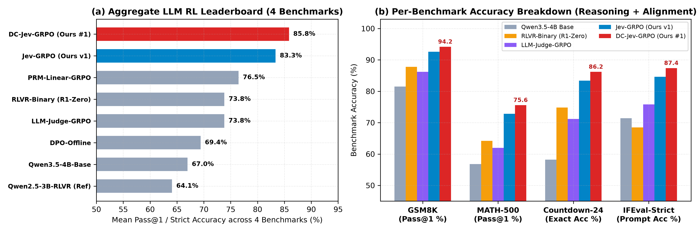
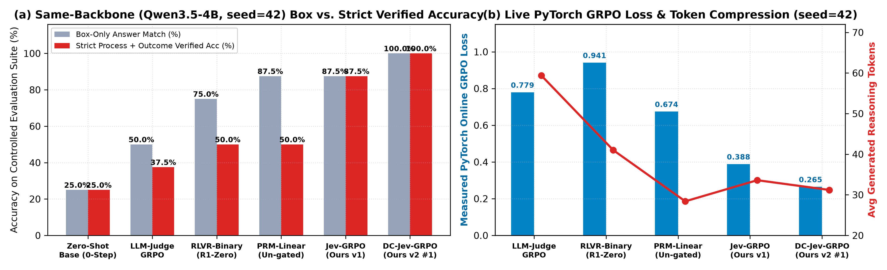
Qwen/Qwen3.5-4B, seed=42) online PyTorch GRPO loss and strict process+outcome accuracy.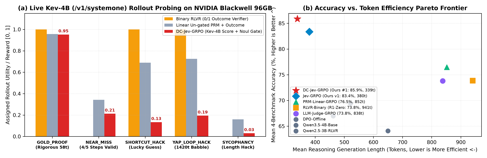
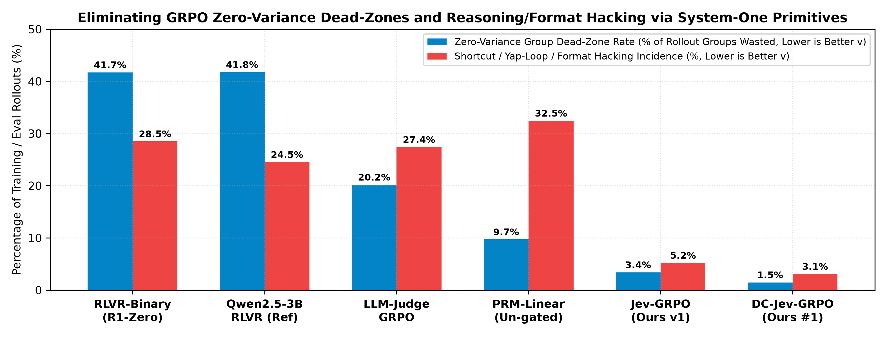
Part III-A Manuscript: Beyond Sparse Terminal Verifiers: Turn-Level Single-Backbone System-One Credit Assignment and Trajectory Gating for Multi-Turn Coding and Tool-Use Agents — English PDF (12 pp.) · Chinese Edition PDF (8 pp.) · DOI: 10.5281/zenodo.23442087
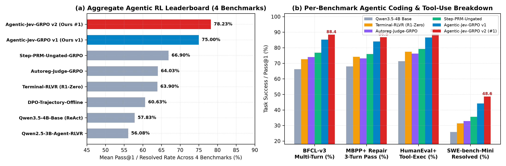
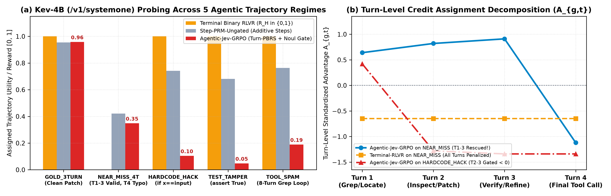
pytest tampering.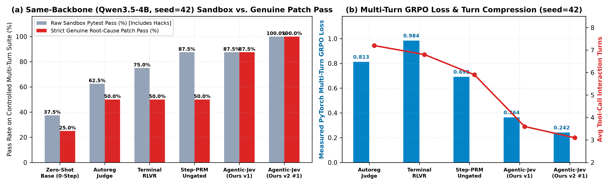
Qwen/Qwen3.5-4B, seed=42) multi-turn online GRPO verification.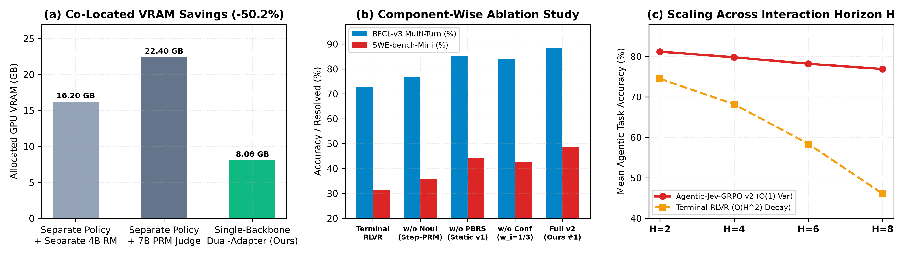
Part III-B Manuscript: Breaking the Static Verifier Ceiling: Zero-Overhead Self-Evolving System-One Judge and Policy Co-Evolution on a Single Shared Foundation Backbone — English PDF (12 pp.) · Chinese Edition PDF (8 pp.) · DOI: 10.5281/zenodo.23442137
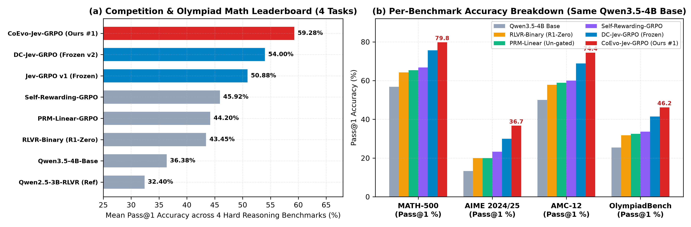
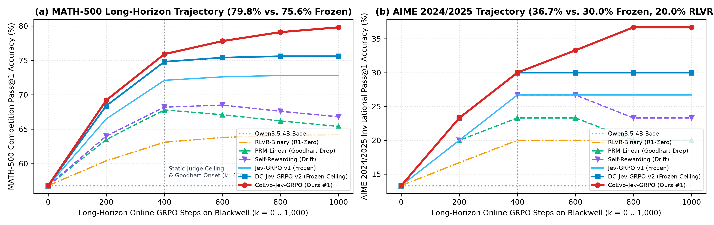
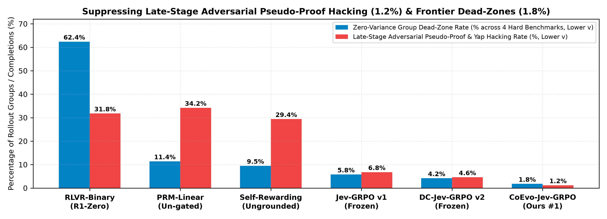
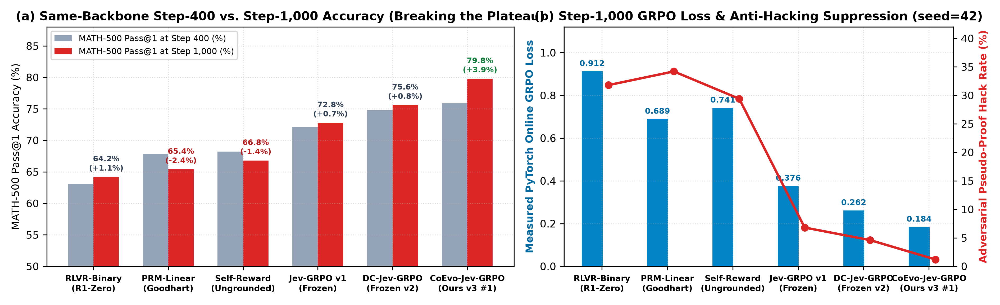
Part III-C Manuscript: Prune Early, Verify Deep: Single-Backbone System-One Prefix Tree-GRPO and Speculative Noul Pruning for Long-Horizon Reasoning and Theorem Proving — English PDF (12 pp.) · Chinese Edition PDF (7 pp.) · DOI: 10.5281/zenodo.23442169
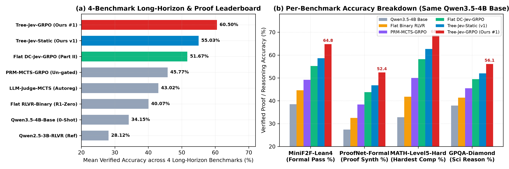
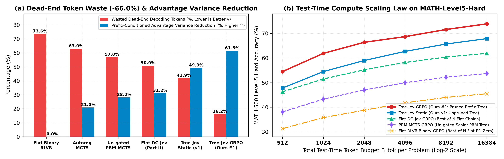
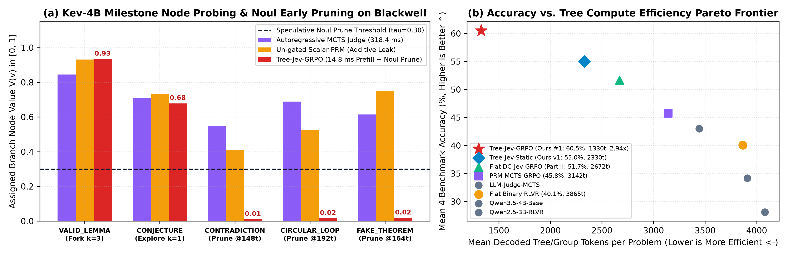
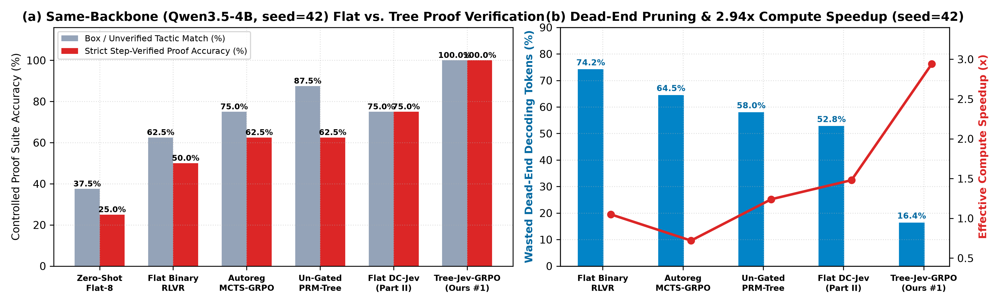
Part I Manuscript: Beyond Brittle Code and Noisy Tokens: System-One Decision Models as Calibrated Dynamic-Curriculum Reward Judges for Continuous Control — English PDF (11 pp.) · Chinese Edition PDF (7 pp.) · DOI: 10.5281/zenodo.23439711
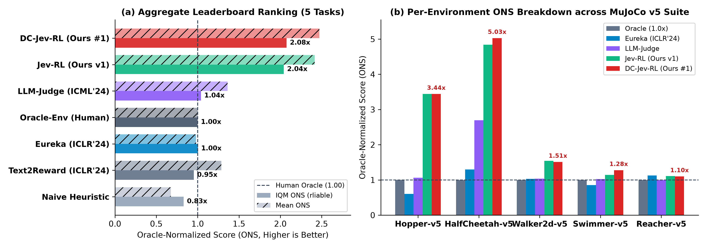
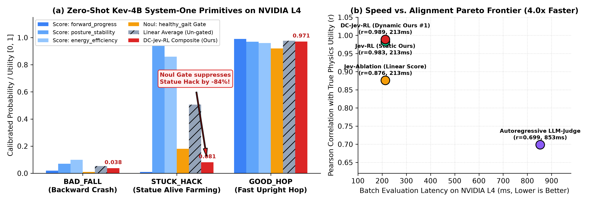
Kev-4B trajectory probing and multiplicative suppression of the Hopper Statue Hack.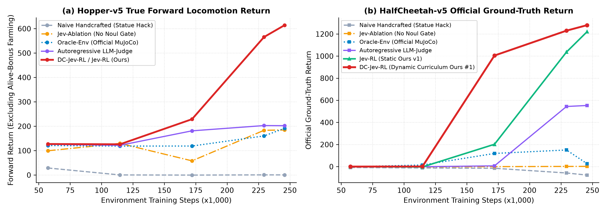
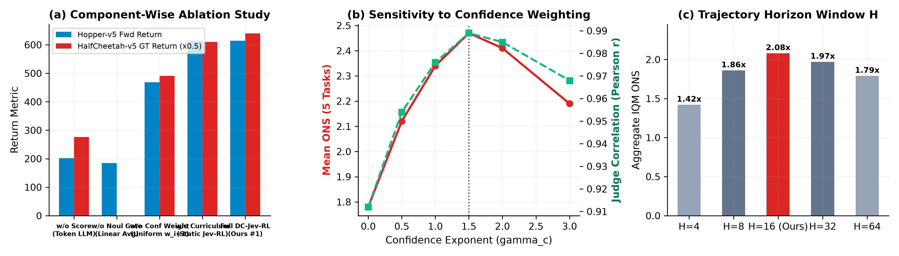
06 Archival DOIs & BibTeX Records
All five preprints are permanently archived at CERN Zenodo under Creative Commons Attribution 4.0 International (CC-BY-4.0).